page: https://www.student.cs.uwaterloo.ca/~cs241/
Instructor: Nomair Naeem, Gregor Richards
defn. a bit is a binary digit that is 0 or 1.
defn. a nibble is 4 bits.
defn. a byte is 8 bits.
defn. a word is a machine-specific grouping of bytes, it is 4 bytes on 32-bit architectures, 8 bytes on 64-bit architectures.
defn. the Most Significant Bit (MSB) is the left-most bit (highest value/sign bit)
defn. the Least Significant Bit (LSB) is the right-most bit (lowest value)
eg. convert from decimal to binary
eg. convert from binary to decimal
method1: break number to factors that are power of 2, eg 38 = 32 + 4 + 2 => 2^5 + 2^2 + 2^1 => 100110
method2: constantly divide number by 2, write all remainders in reverse:
| number | q | r |
|---|---|---|
| 38 | 19 | 0 |
| 19 | 9 | 1 |
| 9 | 4 | 1 |
| 4 | 2 | 0 |
| 2 | 1 | 0 |
| 1 | 0 | 1 |
after every division, the least significant digit is yielded as remainder
result: 100110
use the first bit as sign bit, 0 for positive, 1 for negative.
110110 10 --> 001001 10eg. convert from -38 to two's complement
-38
--> 38 take abs
--> 00100110 to binary
--> 11011001 flip
--> 11011010 add 1
converting 38 to two's complement is the same as unsigned
eg. convert 0b11011010 to decimal
method1:
11011010
--> 00100101 flip bits
--> 00100110 add 1
--> 38
--> -38 negative
method2: treat it as unsigned and convert to decimal, then subtract 2^8 from it
11011010
--> 218 to decimal
--> 218-256 since 1st bit is 1, it is negative
--> -38
eg. arithmetic addition works naturally
.... .
0000 0100 (+4)
+ 1111 1101 (-3)
= 0000 0001 (+1)
.... .
1111 1100 (-4)
+ 1111 1101 (-3)
= 1111 1101 (-7)
overflow occurs when add two numbers of the same sign but get a different sign
.... ...
0111 1111 (+127, CHAR_MAX)
+ 0000 0001 (+1)
= 1000 0000 (-128, CHAR_MIN) # overflow
overflow is not possible if two operands have different signs.
defn. the base-16 representation system is called the hexadecimal system. it consists of the numbers from 0 to 9 and the letters A, B, C, D, E and F (which convert to the numbers from 10 to 15 in decimal notation).
eg. convert 3914 to hex
| number | q | r |
|---|---|---|
| 3914 | 244 | 10 |
| 244 | 15 | 4 |
| 15 | 0 | 15 |
write in reverse: 15 4 10 -> result: 0xF4A
eg. convert 0xF4A to binary each digit in hex represent a nibble in binary:
0xF4A
--> 15 4 10
--> 1110 0100 1010
...
eg.
AND:
0001 0010 0011 0100 0101 0110 0111 1000
& 1000 0111 0110 0101 0100 0011 0010 0001
= 0000 0010 0010 0100 0100 0010 0010 0000
OR:
0001 0010 0011 0100 0101 0110 0111 1000
| 1000 0111 0110 0101 0100 0011 0010 0001
= 1001 0111 0111 0101 0101 0111 0111 1001
SHL (x << n == x * pow(2,n)):
0001 0010 0011 0100 0101 0110 0111 1000 << 16
= 0101 0110 0111 1000 0000 0000 0000 0000
SHR (arithmetic):
0001 0010 0011 0100 0101 0110 0111 1000 >> 16
= 0000 0000 0000 0000 0001 0010 0011 0100
1101 0010 0011 0100 0101 0110 0111 1000 >> 16
= 1111 1111 1111 1111 1101 0010 0011 0100
+---------------------CPU----------------------+ +----------------+
|------+ +--------+ +-------------------+ | | RAM |
|| hi | |general | | | | | |
|------+ |purpose | | | | +-0x00 |
|| lo | |register| | | | +-0x01 |
+------+ +-$0 | | ALU | | +-0x02 |
| +-$1 | | | | |... |
+------+ |... | | | | | |
|| MAR | | | | | | | |
|------+ | | +-------------------+ | | |
|| MDR | | | | | |
+------+ | | | | |
| | | +-------------------+ | | |
+------+ | | | | | | |
|| PC | | | | Control unit | | | |
|------+ |... | | | | | |
|| IR | +-$31 | | | | | |
|------+ |--------+ +-------------------+ | | |
+----------------------------------------------+ +----------------+
fetch-execute cycle:
while true:
IR = MEM[PC] # reads the machine instruction that starts at
# memory address PC (program counter) and retrieves
# it into the IR (instruction register)
PC += 4
decode and execute instruction in IR
end
there are 32 registers $0, ..., $31. $0 will always hold the value zero, $29 will be used as a frame pointer, $30 as the stack pointer and $31 will store the return address
syntax:
assembly machine
add $d, $s, $t: 000000 sssss ttttt ddddd 00000 100000
performs $d = $s + $t
need 5 bits to represent a register value since there are 32 general purpose registers numbered 0 to 31
eg. adds values in $5 and $7 and store result in $3
add $3, $5, $7 000000 00101 00111 00011 00000 100000
5 7 3
sssss ttttt ddddd
it is 0000 0000 1010 0111 0001 1000 0010 0000, ie 0x00A71820
sub instructionsyntax:
sub $d, $s, $t: 00000 sssss ttttt ddddd 00000 100010
the values are interpreted as signed integers, to negate a value in $1, do sub $1, $0, $1
jr instructionsyntax
jr $s: 000000 sssss 00000 00000 00000 001000
$s is interpreted as address. this jumps to the instruction at address stored in register $s.
MIPS programs must have an explicit jump to the return address:
// $31 stores the return address
jr $31: 0000 0011 1110 0000 0000 0000 0000 1000, ie 0x03e00008
lis instructionsyntax:
lis $d: 000000 00000 00000 ddddd 00000 010100
treats the next instruction (appeared in memory) as data (an immediate), and place its value into $d, then skip to the next next instruction by incrementing PC by 4. (the fetch-exec cycle already increments PC by 4 once)
it does: first $d = MEM[PC] then: PC += 4
.word directivesyntax:
.word i: iiii iiii iiii iiii iiii iiii iiii iiii
put literally the data i into the current address
eg. program that adds integers 11 and 13 and stores result in $3
mem addr shorthand hex
0x00 lis $8 0x00004014
0x04 .word 11 0x0000000B
0x08 lis $9 0x00004814
0x0c .word 13 0x0000000D
0x10 add $3,$8,$9 0x01091820
0x14 jr $31 0x03E00008
defn. assembly language is a textual representation of a machine language
lo and hi are not general purpose registers
mult $s, $t000000 sssss ttttt 00000 00000 011000hi (for most significant word) and lo (for least significant word)lomultu $s, $t000000 sssss ttttt 00000 00000 011001div $s, $t000000 sssss ttttt 00000 00000 011010lo and remainder $s%$t in hidivu $s, $t000000 sssss ttttt 00000 00000 011011mfhi $d000000 00000 00000 ddddd 00000 010000hi to register $dmflo $d000000 00000 00000 ddddd 00000 010010lo to register $dbeq $s, $t, i 000100 sssss ttttt iiii iiii iiii iiiibne $s, $t, i 000101 sssss ttttt iiii iiii iiii iiiieg.
xxxx
yyyy
beq $0, $0, -2 // will jump to yyyy
beq $0, $0, 1 // will jump to tttt
zzzz
tttt
eg. update $2 to 3 if the signed number in $1 is odd, and to 11 otherwise
lis $8
.word 2 // store comparer
lis $9
.word 3 // value if $1 odd
lis $2
.word 11 // value if $1 even
div $1, $8 // $1 / 2
mfhi $3 // extract remainder
beq $3, $0, 1 // remainder is 0, then $2 is already 11, skip 1 line
add $2, $9, $0 // else $2 <- $9
jr $31
slt $d, $s, $t 000000 sssss ttttt ddddd 00000 101010sltu $d, $s, $t 000000 sssss ttttt ddddd 00000 101011eg. determine the abs value of signed integer in $1 and store at $1
slt $1, $0, $2
beq $2, $0, 1 // if not less than 0, return
sub $1, $0, $1 // if less than 0, negate
jr $31
eg. determines the minimum of signed integers in $1, $2, places it in $3
slt $4, $1, $2 0x0022202A
beq $0, $4, 2 0x10040002
add $3, $1, $0 0x00201820 // if less than
jr $31 0x03E00008
add $3, $2, $0 0x00401820 // if not less than
jr $31 0x03E00008
eg. compute 13+12+...+1, store result at $3
lis $2
.word 13 // i = 13
lis $1
.word -1 // $1 = -1
add $3, $0, $0 // sum = 0
add $3, $3, $2 // sum += 2 // this line
add $2, $2, $1 // i -= 1
bne $2, $0, -3 // i != 0 && goto ^^
jr $31
when the assembler encounters the definition of a label it associates the name of the label with the address of the instruction at that point. When the assembler encounters a label being used, the assembler computes the number of instructions to skip.
eg. compute 20+18+16+...+2 and store result at $3
0x00 lis $2
0x04 .word 20
0x08 lis $1
0x0c .word 2
0x10 add $3, $0, $0
loop: // defined, addr is 0x14
0x14 add $3, $3, $2
0x18 sub $2, $2, $1
0x1c bne $2, $0, loop // used, computed addr is (0x14 - 0x20)/4 = -3
// (note PC is already at next)
0x20 jr $31
sw $t, i($s) 101011 sssss ttttt iiii iiii iiii iiiilw $t, i($s) 100011 sssss ttttt iiii iiii iiii iiiieg. $1 contains the address of an array and $2 contains # of elements in this array. place 7 in the last spot of the array
lis $4
.word $4 // word with
mult $2, $4
mflo $3 // $3 = len * 4
add $3, $3, $1 // addr just past end of array
lis $8
.word 7
sw $8, -4($3) // len*4-4 is addr of last elem
jr $31
0xFFFF0004 reads one character from stdin and store it as the lease significant byte within the register0xFFFF000C writes the least significant byte to stdouteg.
read:
lis $1
.word 0xffff0004
lw $2, 0($1) // load one char from stdin into $2
write:
lis $1
.word 0xffff000c
lis $2
.word 67
sw $2, 0($1) // outputs 'C' to stdout
when we call bar
bar uses $5 and $6, it will store the original values of $5 and $6 and update $30 to ensure it reflects the boundary between used and unused memorybar changes $5 and $6 and calls baz. baz uses $6 and $9, so it will store the original values of them and update $30baz is done, before returning, it restore the values it overwrote in $6 and $9 and restores $30. when control is back to bar, the register values are the samebaz is done, it will restore $5 and $6 and update $30+-----------+0x00 +------------+ +----free----+ curr
| | | | +-------------<--+$30
| | | | | initial val|
| | ^ | free | | of $9 |
| | | | | +------------+
| | | | | | initial val|
| | | | | curr | of $6 |
| | |free +-------------<--+$30 +-------------<--+$30 by bar
| | |memory | initial val| | initial val|
| | | | of $6 | | of $6 |
| | | +------------+ +------------+
| | | | initial val| | initial val|
| | v | of $5 | initial | of $5 | initial
+-----------+<-++$30 +------------+<--+$30 +------------+<--+$30
INITIAL IN BAR IN BAZ
stack memory grows from bottom to top
pushing a register value on memory stack
sw $1, -4($30) // store value of $1
lis $4
.word 4
sub $30, $30, $4 // update stack pointer
popping a value from memory stack into a register
lis $4
.word 4
add $30, $30, $4 // update stack pointer
lw $1, -4($30) // load into $1
jalr $s 000000 sssss 00000 00000 00000 001001eg. calling a procedure
# a procedure
foo:
...
jr $31 # jump to caller
# start of my caller
sw $31 -4($30) # push $31 to stack
lis $31 # use $31
.word 4
sub $30, $30, $31
lis $21
.word foo
jalr $21 # jump to foo, at this time $31 is next
... # foo returns to here
lis $31 # $31 is changed, set it back to 4
.word 4
add $30, $30, $31
lw $31, -4($30) # pop $31
jr $31 # return to loader
eg. a procedure computing 13+12+...+1
# Sum1ToN adds all numbers 1 to N
# registers:
# $1 scratch (original value preserved)
# $2 input N (original value preserved)
# $3 output (overwrites)
Sum1ToN:
sw $1, -4($30) # preserve $1
sw $2, -8($30) # preserve $2
lis $1
.word 8
sub $30, $30, $1 # update stack ptr
add $3, $0, $0 # res = 0
lis $1
.word -1
loop:
add $3, $3, $2 # res += curr
add $2, $2, $1 # counter--
bne $2, $0, loop
lis $1
.word 8
add $30, $30, $1 # update stack ptr
lw $1, -4($30) # restore $1
lw $2, -8($30) # restore $2
jr $31
eg. get the sum of digits of a positive integer in $1 and store result in $3
# $1: input N (preserved)
# $3: output (overwrites)
# variables:
# $1: remaining number, $4 temp, $10 holds 10
SumDigits:
sw $1, -4($30)
sw $4, -8($30)
sw $10, -12($30)
lis $4
.word 12
sub $30, $30, $4
lis $10
.word 10
add $3, $0, $0 # res
loop:
div $1, $10
mfhi $4 # remainder
add $3, $3, $4
mflo $1 # quotient
bne $1, $0, loop # if not 0 divide again
lis $4
.word 12
add $30, $30, $4
lw $1, -4($30)
lw $4, -8($30)
lw $10, -12($30)
jr $31
eg. get the sum of digits in $1 and $2 and store result in $3
SumDigits2:
# we call other procedures, so need to store $31
sw $31, -4($30)
sw $1, -8($30)
sw $2, -12($30)
sw $4, -16($30)
lis $31
.word 16
sub $30, $30, $31
lis $3 # $1 has first number
.word SumDigits
jalr $3
add $4, $3, $0 # result in $3, copy it to $4
add $1, $2, $0 # copy number in $2 to $1
lis $3
.word SumDigits
jalr $3
add $3, $4, $3 # result
lis $31
.word 16
add $30, $30, $31
lw $31, -4($30)
sw $1, -8($30)
sw $2, -12($30)
sw $4, -16($30)
jr $31
+--------------------------------------------------------------------------------+
| +----------------------------------------------+ |
| | +----------+ +-----------+ +-----------+ | +------------------+ |
| | | scanning | | parsing | | sematics | | | | |
mips +--------> | | +----> +----> analysis +-----------> synthesis | +-----------> mips machine
assembly | | +----------+ +-----------+ +-----------+ | | | | language
language | | analysis | +------------------+ |
| +----------------------------------------------+ |
| mips assembler |
+--------------------------------------------------------------------------------+
0x00 main: lis $2
0x04 .word beyond # symbol table
0x08 lis $1 # main | 0x00
0x0c .word 2 # top | 0x14
# comment # begin | 0x14
0x10 add $3, $0, $0 # beyond | 0x24
top: begin:
0x14 add $3, $3, $2
0x18 sub $2, $2, $1
0x1c bne $2, $0, top # computed: (defn-PC)/4=(0x14-0x20)/4=-3
0x20 jr $31
beyond:
0x24
eg. encode add $3, $2, $4
(s << 21) | (t << 16) | (d << 11) | funcadd $d, $s, $t: 000000 sssss ttttt ddddd 00000 100000
machine code:
6bits opcode 5bits $s 5bits $t 5bits $d 5bits pad 6bits func
000000 00010 00100 00011 00000 100000
2 4 3 32
register indices are all positive, we have
uint32_t instr = (0 << 26) | (2 << 21) | (4 << 16) | (3 << 11) | 32; // or +
eg. encode beq $1, $2, -3
(op << 26) | (s << 21) | (t << 16) | (i & 0xffff)beq $s, $t, i: 000100 sssss ttttt iiiiiiiiiiiiiiii
machine code:
6bits opcode 5bits $s 5bits $t 16bits offset
000100 00001 00010 1111111111111101
8 1 2 -3
note -3 is negative and has to be 16bits, we have to trim the extra leftmost 16bits because it is passed as a 32bit int
// 1111111111111111 1111111111111101
// & 0000000000000000 1111111111111111
// = 0000000000000000 1111111111111101
uint32_t instr = (4 << 26) | (1 << 21) | (2 << 16) | (-3 & 0xffff);
// we can write the bytes out (from left to right)
unsigned char c;
cout << (c = instr >> 24);
cout << (c = instr >> 16);
cout << (c = instr >> 8);
cout << (c = instr);
defn. an alphabet is a non-empty finite set of symbols often denoted by .
defn. a word (string) is a finite sequence of symbols chosen from . the set of all words over an alphabet is denoted by
defn. a language is a set of strings.
eg. is the set of strings over the alphabet consisting of words like aa, aba, abba, ...
defn. a recognition algorithm is a decision algorithm that takes the specification of a language and an input word and answers whether the words satisfies the specification
eg. have language L={ bne, beq, mult, multu }. determine whether word is in L. each character is scanned exactly once without storing previous seen one.
defn. a language over an alphabet is regular if
let be regular languages, then the following are regular:
eg. regular expression for language over where words in the language have an odd number of 's is .
eg. for even number of 's: .
eg. a+ is same as aa*
defn. a DFA is a 5-tuple
eg. the DFA for is

(left: shorthand)
eg. labels in mips consisting of alphanumeric letters:
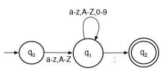
extend the definition of to handle a sequence of transitions based on input string and provide the resulting state after the sequence of characters in the string has been consumed (left fold)
where .
defn. a DFA given by accepts a string iff .
eg.
dfa_recog(w=w[1]w[2]...w[n], s=q[0]):
for i = 1, n:
s = delta(s, w[i]) or reject(w) /* if s is error */
if s in A:
accept(w)
else:
reject(w)
defn. the language of a DFA , is .
theorem. (Kleene) is regular iff for some DFA . ie the regular languages are precisely the languages accepted by DFAs.
eg. dfa that correctly recognizes $0,$1,...,$31

eg. convert a string of binary digits to its decimal representation (N)

if input is "1011", when string is consumed, the number N is the decimal representation 11.
function convert(s)
local n
local state1, state2, errorstate = {}, {}, {}
local state = state1
local function delta(currstate, inputc) --> state
if currstate == state1 then
if inputc == '0' then
n = 0
return state1
elseif inputc == '1' then
n = 1
return state2
else
return errorstate
end
elseif currstate == state2 then
if inputc == '0' then
n = 2 * n
return state2
elseif inputc == '1' then
n = 2 * n + 1
return state2
else
return errorstate
end
else
error()
end
end
for c in s:gmatch('.') do
state = delta(state, c)
end
return n
end
print(convert('1011'))
defn. an NFA is a 5-tuple :
only difference: DFA's transition function outputs a state, NFA's transition function outputs a set of states.
can extend the definition of :
where .
defn. an NFA accepts a string iff .
“board game style” interpretation of NFA recognition: you start with one piece in the start state. When you read a symbol, you remove your piece from the current state, and then place new pieces in each of the states you transition to on the corresponding symbol. Drop the pieces if it In each turn, you do this for all the states you are currently in. You accept when at least one of your pieces is in an accepting state after reading the whole word.
eg.
nfa_recog(w=w[1]w[2]...w[n], S={q[0]}):
for i = 1, n:
S = {...delta(q, w[i]) for q in S}
or reject(w) /* if S = {} */
if S ⋂ A is not Ø:
accept(w)
else:
reject(w)
eg. for the language L = {w: w ends with bba} over the alphabet {a,b}
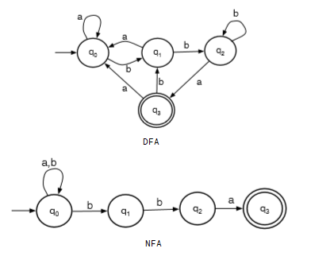
given an input word, the machine chooses to stay at q0 until it sees the ending bba. eg if the input is abbba:
| seen | remain | S |
|---|---|---|
| ε | abbba | {q0} |
| a | bbba | {q0} |
| ab | bba | {q0,q1} |
| abb | ba | {q0,q1,q2} |
| abbb | a | {q0,q1,q2} |
| abbba | ε | {q0,q3} |
{q0,q3} has accepting state q3, so abbba is accepted.
defn. the language of an NFA , is .
subset construction
eg.
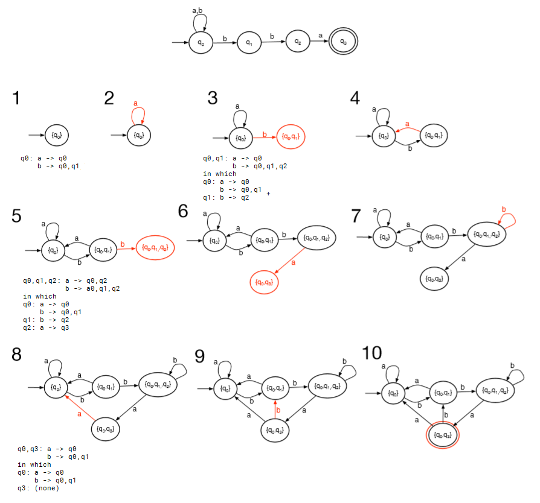
eg. L = {cab}∪{w: w contains even number of a's}
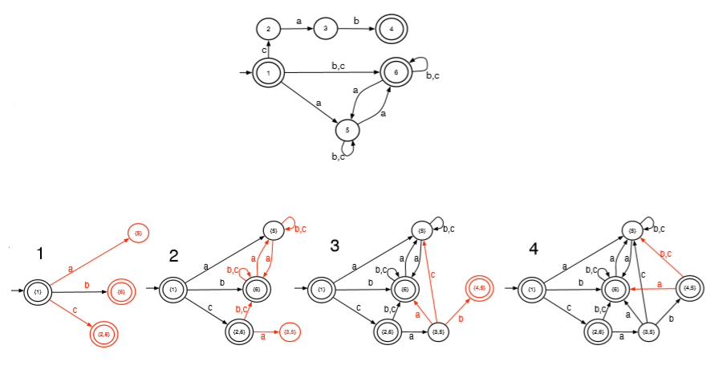
eg. L = {abc}∪{w: w ends with cc}
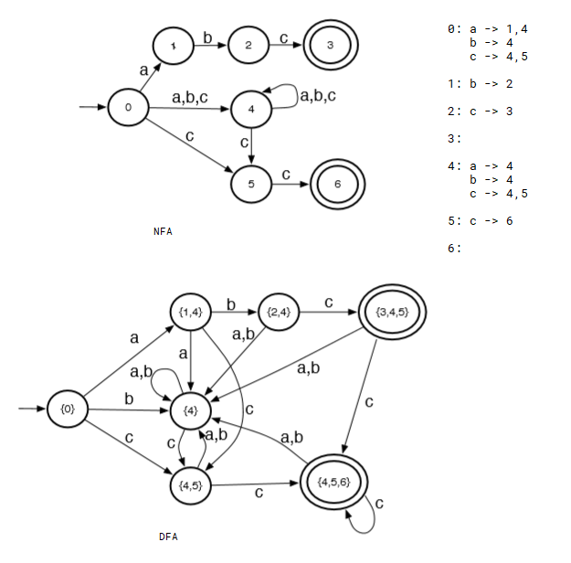
eg. from video

defn. an ε-NFA is a 5-tuple :
defn. the epsilon closure of a set of states is the set of all states reachable from in 0 or more ε-transitions. note .
can extend the definition of :
where .
defn. an ε-NFA accepts a string iff .
eg. L = {abc}∪{w: w ends with cc}
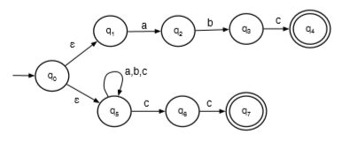
in which the epsilon closure of q0 is {q0,q1,q5}
source state to a dest state consists of a sequence of ε transitions followed by a single transition on symbol a, add a direct transition from source to dest labeled with a.eg.
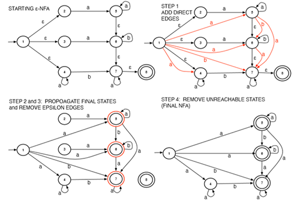
Kleene's theorem also says any regular expression can be converted to an ε-NFA.
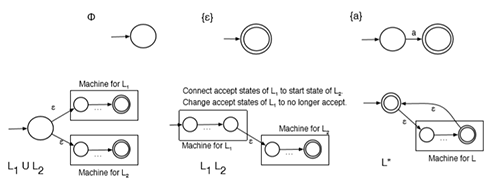
eg. L={a,b,abca}

Consider the input s = ababca. The algorithm consumes a and flags this state, q1, as it is accepting. Being greedy, the algorithm continues to consume more input rather than outputting this token. The algorithm consumes b and reaches state q2. At this point, the algorithm is stuck; it is not at an accepting state and there is no transition on symbol a (the next symbol in the input). The algorithm backtracks to the last seen accepting state, “un-consuming” input that it had greedily consumed. The last seen accepting state is q1, when only a had been consumed. The algorithm outputs an a token and resets the state to q0, the start state. The algorithm then resumes consuming b and flags state q5 as the last seen accepting state. At this point, the algorithm is stuck again as there is no transition on a. Since the current state is an accepting state, the algorithm outputs token b and resets to q0. The algorithm then consumes the second a, the second b, the first c, the third a and runs out of input. This last state, q4, is accepting so the last token abca is output.
problem: above procedure is O(n^2). eg L="abc|(abc)*d" with input "abcabcabcabcabcabcabcabcabc".
problem: consider language L={aa,aaa}. if input is aaaaa, max munch gives aaa, aaa; if input is aaaa, max munch gives aaa even if aa,aa is possible.
L={a,b,abca}, input is ababca. it is rejected when the state is stuck at second asimplified_mm(w=w[1]w[2]...w[n], s=q[0]):
// for DFA
for i = 1, n:
next = delta(s, w[i])
if next is error:
if s in A:
yield token for state s
// continue with remaining characters
s = q[0]
else:
reject(w)
else:
s = next
if s in A:
yield token for state s
accept(w)
else:
reject(w)
typical compiler components:
parse tree
symbol
input +---------+ +---------+parse +----------+table +-----------+ output
code | | token | |tree |context |... | code | code
+----> | scanner +------> | parser +-----> |sensitive +-----> |generation +------->
+---------+ +---------+ |analysis | +-----------+
+----------+
analysis synthesis
<----------------------------------------------> <----------->
scanner weeds out lexically invalid programs (wrong keyword); context sensitive analysis weed out weed out semantically invalid programs (undefined identifier...)
to recognize valid arithmetic expressions from Σ={ID (var name) ,OP (+=*/) ,LPAREN, RPAREN}, the following DFA can be used

this allows one level paren eg (a+b)*(c-d). (to allow nested parens, append after the second line with same arrows)
this regular language does not allow infinite nestings.
defn. a context free grammar (CFG) is a 4 tuple:
the set of all symbols is called the vocabulary.
eg. a CFG representing valid arithmetic expressions with arbitrary balanced parens:
N = { expr }
T = { ID, OP, LPAREN, RPAREN }
productions:
expr -> ID
expr -> expr OP expr
expr -> LPAREN expr RPAREN
S = expr
note each lhs must have a non-terminal, each rhs can have both terminal and non-terminal.
defn. over a , we say directly derives , , iff there is a rule in .
defn. over a , we say derives , , if either , or there exists such that and .
defn. over a , a derivation of a string of terminals is a sequence such that and and for .
CFG is a set of rewriting rules that expand every non-terminals on rhs by terminals
eg. expr directly derives ID because there is expr -> ID in productions.
eg. show expr =>* ID OP LPAREN ID OP ID RPAREN
expr => expr OP expr (apply expr -> expr OP expr)
=> ID OP expr (apply expr -> ID)
=> ID OP LPAREN expr RPAREN (apply expr -> LPAREN expr RPAREN)
=> ID OP LPAREN expr OP expr RPAREN (apply expr -> expr OP expr)
=> ID OP LPAREN ID OP expr RPAREN (apply expr -> ID)
=> ID OP LPAREN ID OP ID RPAREN (apply expr -> ID)
each step of the derivation chooses a non-terminal from the current and rewrites it by replacing it with the rhs of some rule for that non-terminal.
defn. the language of a is .
defn. a language is context-free iff there exists a CFG such that .
eg. let , write a CFG for . find a derivation for string .
N = { S }
T = { a, b }
productions:
S -> ε
S -> aSb
aaabbb:
S => aSb => aaSbb => aaaSbbb => aaabbb
the shorthand is . note the lhs, first production rule tells the start symbol; and N, T are inferred from rules.
eg. write a CFG for palindromes over { a,b,c }.
S -> aSa | bSb | cSc | M
M -> a | b | c | ε
eg. write a CFG for regular expression a(a|b)*b.
S -> aMb
M -> aM | bM | ε
eg. write a CFG for regular expression a|b+.
S -> a | M
M -> b | M b
if grammar has useless production rule of infinite recursion it is not reduced.
eg. consider language L(G) = { abgh, abgef, cdgh, cdgef }
S -> BgC
B -> ab|cd
C -> h|ef
then for string abgef it has two derivations, but resulting in same parse tree
S => BgC => Bgef => abgef (rightmost derivation, expand right non-terminal first)
S => BgC => abgC => abgef (leftmost derivation, expand left non-terminal first)
S
/ | \
/ | \
/ | \
B g C
/ \ / \
/ \ / \
/ \ / \
a b e f
the root is the start symbol; non-leaf node is a non-terminal and its immediate descendants are rhs of the rule; leaf nodes are terminals of ε.
parse trees has two properties:
defn. a grammar is ambibuous if ther eis a word in the language which has more than one distinct leftmost derivation, or more than one distinct rightmost derivation.
eg. consider a CFG for arithmetic operations
S -> a|b|c|SRS
R -> +|-|*|/
the string a - b * c has two derivations even with leftmost derivation:
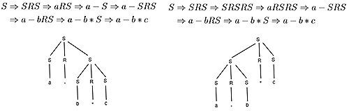
we can force a pair of brackets to specify the order, so that only ((a-b)*c) or (a-(b*c)) are accepted:
S -> a|b|c|(SRS)
R -> +|-|*|/
we can make the language right/left associative by controlling the recursion depth:

we can make * and / appear further down the tree so they take precedence:
S -> SPT|T
T -> TRF|F
F -> a|b|c|(S)
P -> +|-
R -> *|/
eg the input a - b * c has following tree:
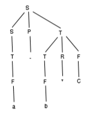
expression is evaluated using post-order, depth-first traversal.
eval_tree(t):
switch t:
S -> SPT: return eval_expr(t.S, t.P, t.T)
T -> TRF: return eval_expr(t.T, t.R, t.F)
S -> T: T -> F: return eval_tree(t.child)
F -> a|b|c: return values
F -> (S): return eval_tree(t.S)
P -> +|-: R -> *|/: return t.operator
eval_expr(left_tree, op_tree, right_tree):
auto left = eval_tree(left_tree)
auto op = eval_tree(op_tree)
auto right = eval_tree(right_tree)
return left op right
Formally, context-free languages can be recognized by a model of computation called Pushdown Automata. A Pushdown Automaton (PDA) is a Finite Automaton with the addition of a stack, and stack actions on transitions: Each transition may push a symbol to the stack, pop a symbol, and/or require that a given symbol be on the top of the stack. Like Finite Automata, there are Deterministic PDA’s and Nondeterministic PDA’s. But, while the number of states is finite like Finite Automata, the stack is potentially infinite, and because of this infinite component, there is no conversion of NPDA’s to DPDA’s equivalent to the conversion of NFA’s to DFA’s. Without this conversion, it’s impractical to actually use PDA’s to recognize context-free languages. Instead, we use a number of parsing algorithms which are less powerful than PDA’s, parsing only a subset of CFL’s, but which are much more practical.
it is better if the start symbol has only one production rule. if not, we can augument the grammar CFG to create :
where is new start state with only one rule, are begin of file and end of file.
given a string, we want to output a (leftmost) derivation. ie a sequence .
defn. LL(1) means Left to right, Leftmost derivations, look ahead at 1 symbol.
defn. a grammar is iff each cell of the predict table contains at most one rule.
following parsing is LL(1) parsing:
top_down_parse(input):
// given a first matched character a, current nonterminal A,
// predict[A][a] gives a possible derivation
auto stk = new stack
stk.push(S')
for a in "⊢ input ⊣":
auto A = stk.top()
// if TOS (top of stack) is a non terminal
while A in N:
stk.pop()
if predict[A][a] gives "A -> γ":
push to stk symbols in γ right to left
// at his point link items in stack with tree nodes
// at this point yield read+stack snapshot for derivation
else:
reject(input)
// if TOS is a terminal
if stk.top() != a:
reject(input)
else: // match
stk.pop()
// at this point put the actual string to token node
accept(input) // stk is necessarily empty
it rejects input when 1. TOS is a terminal, but does not match the next input symbol, 2. the algorithm queries predict but finds no rules or multiple rules
eg.
productions: predict
1. S' -> ⊢ S ⊣ ⊢ a b c d w x y z ⊣
2. S -> AyB S' 1
3. A -> ab S 2 2
4. A -> cd A 3 4
5. B -> z B 6 5
6. B -> wx
input is abywx, procedure is
| read | unread | stack | derivations (read+stack) | |
|---|---|---|---|---|
| ε | ⊢ a b y w x ⊣ | S' | pop S', predict[S'][⊢] gives 1, push ⊣ S ⊢ |
S' |
| ε | ⊢ a b y w x ⊣ | ⊢ S ⊣ | match ⊢ | ⊢ S ⊣ |
| ⊢ | a b y w x ⊣ | S ⊣ | pop S, predict[S][a] gives 2, push B y A |
|
| ⊢ | a b y w x ⊣ | A y B ⊣ | pop A, predict[A][a] gives 3, push b a |
⊢ A y B ⊣ |
| ⊢ | a b y w x ⊣ | a b y B ⊣ | match a | ⊢ a b y B ⊣ |
| ⊢ a | b y w x ⊣ | b y B ⊣ | match b | |
| ⊢ a b | y w x ⊣ | y B ⊣ | match y | |
| ⊢ a b y | w x ⊣ | B ⊣ | pop B, predict[B][w] gives 6, push x w |
|
| ⊢ a b y | w x ⊣ | w x ⊣ | match w | ⊢ a b y w x ⊣ |
| ⊢ a b y w | x ⊣ | x ⊣ | match x | |
| ⊢ a b y w x | ⊣ | ⊣ | match ⊣ | |
| ⊢ a b y w x ⊣ | ε | accept |
the derivation is 1, 2, 3, 6: S' => ⊢S⊣ => ⊢AyB⊣ => ⊢abyB⊣ => ⊢abywx⊣.
also note the concatenation of read and stack gives the 's obtained in the derivation used in parse tree.
defn.
eg.
1. S' -> ⊢ S ⊣ predict
2. S -> E S ⊢ ⊣ id num : ; if then
3. S -> ε S' 1
4. E -> id S 3 2 2 2 3 2 3
5. E -> num E 4 5 6 7
6. E -> : id S ;
7. E -> if S then
computing nullable
observations:
// compute Nullable(A) for all A in N'
nullable = [false for A in N']
do:
for production in P:
if P is "A -> ε" or (P is "A -> B1...Bk"
and nullable[B1] == ... == nullable[Bk] == true):
nullable[A] = true
while nullable changed
have to cycle enough times until the nullable result does not change from previous iteration.
computing first
observations:
// compute First(A) for all A in N'
first = [{} for A in N']
do:
for "A -> B1...Bk" in P:
for Bi in "B1...Bk":
if Bi in T':
first[A] ∪= {Bi}
break
else: // non terminal
first[A] ∪= first[Bi]
// only look at Bi+1 if current Bi is nullable, otherwise
// next symbol does not contribute to first(A)
if !nullable[Bi]:
break
while first changed
we can also only compute first for one B1..., instead of lhs of a production rule
first(B1...Bk):
// first(β) where β = B1...Bk in V*
result = {}
for Bi in "B1...Bk":
if Bi in T':
result ∪= {Bi}
break
else:
result ∪= first[Bi]
if !nullable[Bi]: break
return result
computing follow
// Follow(A) for all A in N (N' - {S'})
follow = [{} for A in N]
do:
for "A -> B1...Bk" in P:
for Bi in "B1...Bk":
if Bi in N:
follow[Bi] ∪= first(Bi+1...Bk) // second ver
if (nullable[Bi+1] == ... == nullable[Bk] == true)
or i == k:
follow[Bi] ∪= follow[A]
while follow changed
computing predict table
predict = [[{} for all a in T'] for all A in N']
for "A -> β" in P:
for a in first(β): // second ver
predict[A][a] ∪= "A -> β"
if nullable(β):
for a in follow[A]:
predict[A][a] ∪= "A -> β"
eg.
1. S' -> ⊢ S ⊣ summary predict
2. S -> b S d Nullable First Follow ⊢ ⊣ b d p q l
3. S -> p S q S' false ⊢ S' 1
4. S -> C S true b,p,l ⊣,d,q S 4 2 4 3 4 4
5. C -> l C C true l ⊣,d,q C 6 6 6 5
6. C -> ε
note this grammar is LL(1) since each entry in predict table has at most 1 rule.
theorem. a grammar is iff:
theorem. a grammar is never if two or more rules for the same non-terminal with a common left prefix of length .
theorem. a grammar is never if it is left recursive.
eg. consider this (left recursive) grammar
1. S -> S + T
2. S -> T
3. T -> T * F
4. T -> F
5.6.7. F -> a | b | c
it is not LL(1) since rules 1, 2, with same lhs can generate the same terminal. can show since , and since .
solution 1: we can convert it to right recursive, then apply left factoring: suppose all with common prefix , we can change it to:
left recursive right recursive factored
1. S -> S + T 1. S -> T + S 1. S -> T X
2. S -> T 2. S -> T 2.3. X -> + S | ε
3. T -> T * F 3. T -> F * T 4. T -> F Y
4. T -> F 4. T -> F 5.6. Y -> * T | ε
5.6.7. F -> a|b|c 5.6.7. F -> a|b|c 7.8.9. F -> a|b|c
solution 2:
use this transformation when converting from left recursive to right:
replace with
replace with
where does not begin with the non-terminal .
left recursive right recursive
1. S -> S + T 1. S -> T S'
2. S -> T 2.3. S'-> + T S' | ε
3. T -> T * F 4. T -> F T'
4. T -> F 5.6. T'-> * F T' | ε
5.6.7. F -> a|b|c 7.8.9. F -> a|b|c
but the parse tree is also changed.
begin reading input symbols one character at a time left to right. If we recognize the RHS of a rule, replace it with its LHS
eg.
1. S' -> ⊢ S ⊣
2. S -> AyB
3. A -> ab
4. A -> cd
5. B -> z
6. B -> wx
input is abywx:
| read | unread | stack | derivations (stack+unread) | |
|---|---|---|---|---|
| ε | ⊢ a b y w x ⊣ | shift ⊢ | ||
| ⊢ | a b y w x ⊣ | ⊢ | shift a | |
| ⊢ a | b y w x ⊣ | ⊢ a | shift b | |
| ⊢ a b | y w x ⊣ | ⊢ a b | reduce rule 3: pop b,a; push A | ⊢ a b y w x ⊣ |
| ⊢ a b | y w x ⊣ | ⊢ A | shift y | |
| ⊢ a b y | w x ⊣ | ⊢ A y | shift w | |
| ⊢ a b y w | x ⊣ | ⊢ A y w | shift x | |
| ⊢ a b y w x | ⊣ | ⊢ A y w x | reduce rule 6: pop x,w; push B | ⊢ A y w x ⊣ |
| ⊢ a b y w x | ⊣ | ⊢ A y B | reduce rule 2: pop B,y; push S | ⊢ A y B ⊣ |
| ⊢ a b y w x | ⊣ | ⊢ S | shift ⊣ | |
| ⊢ a b y w x ⊣ | ε | ⊢ S ⊣ | reduce rule 1: pop ⊣,S,⊢; push S' | ⊢ S ⊣ |
| ⊢ a b y w x ⊣ | ε | S' | accept | S' |
this produces a reversed, rightmost derivation. the rules are 1, 6, 2, 3.
defn. an item is a production with a bookmark somewhere on the RHS of the rule.
eg. consider
1. S' -> ⊢ E ⊣
2. E -> E + T
3. E -> T
4. T -> ID
then E -> ●E + T is fresh item indicating none of the rhs is on the stack. if the algorithm pushes an E on the stack, we have E -> E ●+ T. finally E -> E + T ● means all items on rhs are on the stack thus reducible.

to track all rules at the same time, we can use ε-NFA to glue these automations for each rule together.
The following steps can be used as a shortcut to produce the DFA directly:
- Create a start state with a fresh item for the single rule for the start symbol
- Select a state qi that has at least one non-reducible item. For each non-reducible item in qi, create a transition to a new state qj on the symbol X that follows the bookmark. Take all items from qi where the bookmark is followed by an X, update the bookmark to be right after X and add them as items in qj.
• For each item in the newly created states, if the symbol following the updated bookmark is a non-terminal, say A, add fresh items for all rules for non-terminal A to the new state. If this creates fresh items where a bookmark is followed by a non-terminal, say B, add fresh items for all rules of B. Repeat if necessary.
- Repeat step 2 until no new states are discovered.
- Mark states containing reducible items as accept states.
the LR(0) parsing DFA for this grammar is
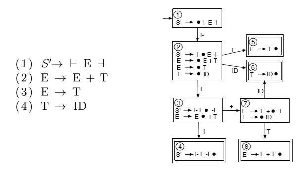
defn. LR(0) means Left to right, Rightmost derivations, not looking ahead symbols.
defn. given a grammar , is a sentential form if . we say is a viable prefix if it is the prefix of a sentential form, ie for some .
defn.
below is LR(0) parsing algorithm
// whenever we read a symbol, push it to symbol_stack
// whenever we complete a transition, push the state to state_stack
// when we arrive at an accepting state (reducible), we have to go back k states
// where k is # of symbols
lr_0_parse(input, dfa{Σ,Q,q0,δ,A}):
auto state_stack = new stack,
symbol_stack = new stack
state_stack.push(q0)
for a in "⊢ input ⊣":
// for LR(1), SLR(1), LALR(1) this line is
// while reduce[state_stack.top(), a] is "B -> γ":
while reduce[state_stack.top()] is "B -> γ":
symbol_stack.pop symbols in γ
state_stack.pop |γ| states
// state go to B
symbol_stack.push(B)
state_stack.push(δ(state_stack.top(), B))
// cannot reduce, try shift
symbol_stack.push(a)
if δ(state_stack.top(), a) is error: reject(input)
state_stack.push(δ(state_stack.top(), a))
accept(input)
where reduce[state] is a function that given a state, tells us whether this is a reduce state and gives that rule.
symbol_stack can be a tree stack: for terminal, we push leaf nodes, for non-terminals, we pop leaf nodes, connect it to a non-terminal node, then push the non-terminal node back to stack. eventually we will have a parse tree.
eg. input is ⊢ ID + ID ⊣
| read | unread | symbol stack | state stack | |
|---|---|---|---|---|
| ε | ⊢ ID + ID ⊣ | 1 | state 1 is shift state. shift ⊢ | |
| ⊢ | ID + ID ⊣ | ⊢ | 1 2 | state 2 is shift state. shift ID |
| ⊢ ID | + ID ⊣ | ⊢ ID | 1 2 6 | state 6 is reduce state. reduce rule 4 |
| ⊢ ID | + ID ⊣ | ⊢ T | 1 2 5 | state 5 is reduce state. reduce rule 3 |
| ⊢ ID | + ID ⊣ | ⊢ E | 1 2 3 | state 3 is shift state. shift + |
| ⊢ ID + | ID ⊣ | ⊢ E + | 1 2 3 7 | state 7 is shift state. shift ID |
| ⊢ ID + ID | ⊣ | ⊢ E + ID | 1 2 3 7 6 | state 6 is reduce state. reduce rule 4 |
| ⊢ ID + ID | ⊣ | ⊢ E + T | 1 2 3 7 8 | state 8 is reduce state. reduce rule 2 |
| ⊢ ID + ID | ⊣ | ⊢ E | 1 2 3 | state 3 is shift state. shift ⊣ |
| ⊢ ID + ID ⊣ | ε | ⊢ E ⊣ | 1 2 3 4 | state 4 is reduce state. reduce rule 1 |
| ⊢ ID + ID ⊣ | ε | S' | accept as soon as pushing S' |
there is error if no transition on given symbol exists.
defn. a shift-reduce conflict occurs when a state in the parsing DFA has two items if the form and where and .
defn. a reduce-reduce conflict occurs when a state in the parsing DFA has two items of the form and where .
defn. a grammar is iff the automaton does not have any shift-reduce or reduce-reduce conflicts.
eg.
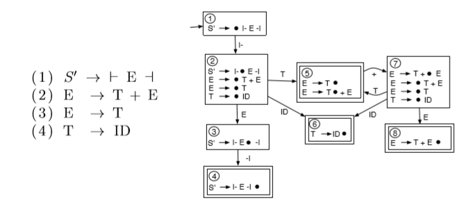
in state 5, we have two choices: accept E -> T or waiting for another +. we cannot make decision since we cannot look ahead 1 symbol. this is a shift-reduce conflict. so this grammar is not LR(0).
means simplied LR(1).
we extend the definition of items: for each reducible item, add the follow set for the LHS non-terminal to the item. we thus extend the definition of LR(0) DFA by using one lookahead.
defn. for SLR(1), , where is the next symbol.
eg. for previous not LR(0) grammer,
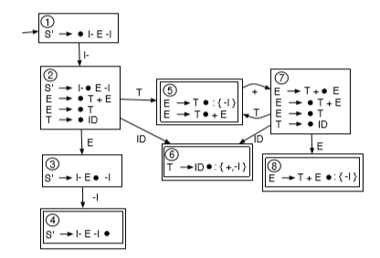
at State 5. with SLR(1), we added the Follow set for E to the reducible item. The SLR(1) algorithm will reduce using the reducible item only if the next input symbol is in the Follow set of this reducible item. if the next input symbol is ⊣, we will reduce using the rule E -> T. However, if the next input symbol is not ⊣, we will shift the next input symbol (of course if the next input symbol happens to be something other than +, this would generate a parse error).
eg.
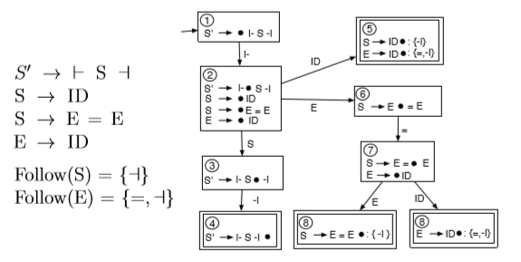
if input is ⊢ ID ⊣, when in State 5, ⊣ is in both follow sets of the two rules. we do not know what to choose from. ie it is not SLR(1) because the intersection of two follow sets is not empty.
the LR(1) DFA is created by only adding the lookahead that should be present for a particular rule to be used in the reduce step, ie only adding a subset of the Follow set to each reducible item. for this eg, we should only reduce using the rule S -> ID if the next input symbol is a. similarly, we should only reduce using the rule E -> ID, if the next input symbol is =.
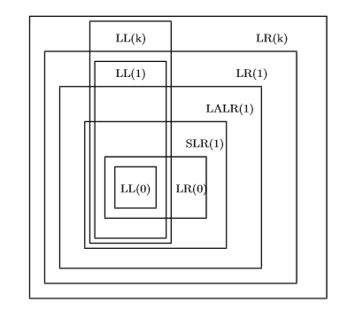
guide
WLP4 language specification
sample parse tree:
class Tree:
string rule // eg expr expr PLUS term
vector<string> tokens // from scanner
vector<Tree> children
the parse tree created by a parser is often called a Concrete Syntax Tree. often, this parse tree is passed through a tree transformation stage before applying Context Sensitive Analyses. during this stage, the tree is pruned by removing useless nodes such as those needed to ensure that the grammar is unambiguous and to satisfy the requirements of a specific parsing algorithm. This transformed tree is often called an Abstract Syntax Tree.
rules for surrounding variables
symbol_table = map<procedure_name, map<variable_name, type>>procedure -> INT ID LPAREN params RPAREN
LBRACE dcls statements RETURN expr SEMI RBRACE
wain -> INT WAIN LPAREN dcl COMMA dcl RPAREN
LBRACE dcls statements RETURN expr SEMI RBRACE
since declarations only appear at top of the procedure, just traverse once until statements is encountered to get all symbols. when using symbols, traverse through statements and find rules factor -> ID and lvalue -> ID.
eg.
int f() { int f = 1; return f + 1; } // valid, local f shadows the function name.
int p(int p) { return p(p); } // not valid, p is of type int
rules of interest are factor -> ID LPAREN RPAREN and factor -> ID LPAREN arglist RPAREN when calling procedures. before that have to check signatures, and finding the signature of a procedure when creating symbol tables
signature = vector<type>symbol_table = map<procedure_name, tuple<signature, map<variable_name, type>>>eg.
int f() { int *a = NULL; return 9; }
int wain(int a, int b) { int x = 10; return x+a+b; }
symbol table:
{
f: {
signature: [],
variables: { a: "int*" }
},
wain: {
signature: [ "int", "int" ],
variables: { a: "int", b: "int", x: "int" }
}
}
a sample statement a = x + 3 tree looks like

first get the type of ID by traversing first subtree. for rhs, traverse third subtree to get type. error if two are different.
for expr -> term, we have type(expr) = type(term).
for factor -> LPAREN expr RPAREN, we have type(factor) = type(expr).
eg. a program tree
int sum(int *arr, int len) {
int i = 0;
int ret = 0;
while (i < len) {
ret = ret + *(arr + i);
i = i + 1;
}
return ret;
}
int wain(int *arr, int len) {
return sum(arr, len) + len;
}
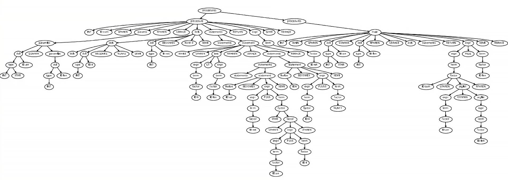
type inference rules for expressions:
intint*int produces int*int* produces intnew int[E] takes an int value E and produces an int*ints produces intint* and int and vice versa produces int*int* and int* produces intint from an int* produces a pointerdefn. we say a statement is well-typed if its components are well-typed.
type checking for statements:
println(E) statement is well-typed iff E is of type intdelete[] E is well-typed iff E is of type int*E1 = E2 (assignment) is well-typed iff types of lhs and rhs are same
E1 < E2, E1 <= E2, E1 > E2, E1 >= E2, E1 == E2, E1 != E2 is well-typed iff E1 and E2 have same typeif statement is well-typed iff test condition, branch1, branch2 are well-typedwhile statement is well-typed iff test condition, statements are well-typedint is well-typed if it is initialized with an int valueint* is well-typed if it is initialized with a NULL valueintwain is well-typed if the second parameter is int, and satisfies above conditionthe program is syntactically and semantically valid if it passes all tests so far.
eg.
int wain(int a, int b) { // $1, $2
int c = 0;
return c; // $3
}
symbol table:
stack symbol table
+--------+
| |
| | sym type offset($29)
+--------+ <-$30 +------------------+
| c | | a int 0 |
+--------+ +------------------+
| b | | b int -4 |
+--------+ <-$29 +------------------+
| a | | c int -8 |
+--------+ +------------------+
generated code:
# prologue
lis $4 # convention, always store 4
.word 4
sub $29, $30, $4 # setup frame pointer
sw $1, 0($29) # push a
sub $30, $30, $4 # update stack pointer
sw $2, -4($29) # push b
sub $30, $30, $4 #
sw $0, -8($29) # push c
sub $30, $30, $4 #
lw $3, -8($29) # load c
# epilogue
add $30, $30, $4
add $30, $30, $4
add $30, $30, $4
jr $31
convention.
code(expr)
is the generated code that evaluates expr and stores result in $3
code(a) generates: if a is variable
lw $3, 0($29) where 0 is offset retrieved from table
push($X) generates:
sw $X, -4($30)
sub $30, $30, $4
pop($X) generates:
add $30, $30, $4
lw $X, -4($30)
eg.
int wain(int a, int b) { // $1, $2
int c = 3;
return a + (b - c); // $3
}
generated code:
# prologue
lis $4
.word 4
sub $29, $30, $4
push($1) # use $30 to push, but still use $29 get get values out
push($2)
lis $5
.word 3
push($5)
code(a) # load a in $3
push($3) # a to stack top
code(b) # load b in $3
push($3) # b to stack top
code(c) # load c in $3
pop($5) # b to $5
sub $3, $5, $3 #
pop($5) # a to $5
sub $3, $5, $3 #
# epilogue
add $30, $30, $4
add $30, $30, $4
add $30, $30, $4
jr $31
for addition expr1 -> expr2 PLUS term, we have expansion
when both types are int:
code(expr1) =
code(expr2)
push($3)
code(term)
pop($5) convention: $5 holds intermediate values
add $3, $5, $3
same for MINUS, STAR, SLASH and PCT.
for S -> ⊢ procedure ⊣, we have code(S) = code(procedure).
for expr -> term, we have code(expr) = code(term).
for factor -> LPAREN expr RPAREN, we have code(factor) = code(expr).
for assignment statement statement -> lvalue BECOMES expr SEMI, we have
when lvalue -> ID:
code(statement) =
code(expr)
sw $3, offset($29) where offset is computed; if it is ID
then look up symbol table
for statement -> PRINTLN LPAREN expr RPAREN SEMI, we have
code(println(expr);) =
push($1) if current $1 has to be preserved
code(expr)
add $1, $3, $0 parameter stored in $1
push($31)
lis $5
.word print external
jalr $5
pop($31)
pop($1)
convention.
# prologue
.import print # print.merl
.import init # alloc.merl
.import new
.import delete
lis $4 # 4 always hold 4
.word 4
lis $10 # 10 always hold println
.word print
lis $11 # $11 always hold 1
.word 1
sub $29, $30, $4
# reserve space for variables
# WLP4 code
# epilogue
# deallocate parameters and local variables of wain
jr $31
the only other convention that is not apparent from the snippet above is that while evaluating any arbitrary expression, we use register 5 temporarily hold values.
for test -> expr1 < expr2 we have
when both types are int:
code(test) =
code(expr1)
push($3)
code(expr2)
pop($5)
slt $3, $5, $3
for test -> expr1 != expr2 we have
when both types are int:
code(test) =
code(expr1)
push($3)
code(expr2)
pop($5)
slt $6, $3, $5
slt $7, $5, $3
add $3, $6, $7
for test -> expr1 == expr2, append sub $3, $11, $3 to above to flip result (also applicable to >=).
for statement -> IF (test) {stmts1} ELSE {stmts2}, we have
code(statement) =
code(test)
beq $3, $0, _else
code(stmts1)
beq $0, $0, _endif
_else:
code(stmts2)
_endif:
for statement -> WHILE (test) {statements}, we have
code(statement) =
_while:
code(test)
beq $3, $0, _endwhile
code(statements)
beq $0, $0, _while
_endwhile:
for factor -> NULL, we have
code(factor) = add $3, $0, $11
ie we set NULL to 1. so dereferencing NULL results in unaligned access error.
for factor1 -> STAR factor2, we have
code(factor1) =
code(factor2)
lw $3, 0($3)
since the code already passes type checks, we know factor2 is an address.
for factor -> AMP lvalue, we have
when lvalue -> ID:
code(factor) =
lis $3
.word offset look up symbol table
add $3, $3, $29
when lvalue -> STAR factor2:
code(factor) =
code(factor2)
note there is also third case when lvalue1 -> ( lvalue2 ), it degrades to lvalue2.
for statement -> lvalue BECOMES expr SEMI, we have
when lvalue -> STAR factor:
code(statement) =
code(expr)
push($3)
code(factor)
pop($5)
sw $5, 0($3)
same as comparisons of int, but both sides have to be int* (need to look up types). since pointers are unsigned, need to use sltu.
for expr1 -> expr2 PLUS term when one operant is int and the other is pointer, we have
when expr2 is int*, term is int:
code(expr1) =
code(expr2)
push($3)
code(term)
mult $3, $4
mflo $3
pop($5)
add $3, $5, $3
when expr2 is int, term is int*:
same, but switch order of code(expr2) and code(term)
for expr1 -> expr2 MINUS term, when expr2 is int* and term is int, same as above, but change add to sub.
for expr1 -> expr2 MINUS term, when both operands are int*, we have
when both are int*:
code(expr1) =
code(expr2)
push($3)
code(term)
pop($5)
sub $3, $5, $3
div $3, $4
mflo $3
the presence of module alloc.merl is assumed; it provides procedures new and delete.
for factor -> NEW INT [expr], we have
code(factor) =
code(expr)
add $1, $3, $0
push($31)
lis $5
.word new
jalr $5 call new
pop($31)
bne $3, $0, 1 if success, skip next instr
add $3, $11, $0 if fails, set $3 to NULL
for statement -> DELETE [ ] expr ;, we have
code(statement) =
code(expr)
beq $3, $11, _skipdelete
add $1, $3, $0
push($31)
lis $5
.word delete
jalr $5
pop($31)
_skipdelete:
note: init must be called before any new is called.
cs241.linkasm < output.asm > output.merl
cs241.linker output.merl print.merl alloc.merl > exec.merl
cs241.merl 0 < exec.merl > exec.mips
mips.{twoints,array} exec.mips
the layout:
# prologue wain
# wain's code
# epilogue wain
jr $31
# prologue f
# f's code
# epilogue f
jr $31
...
for calling procedure factor -> ID(expr1, ..., exprn), with caller-save semantics for the frame pointer, we have
code(factor) =
push($29) caller save $29
push($31)
code(expr1) push arguments
push($3)
...
code(exprn)
push($3)
lis $5
.word ID procedure name
jalr $5
pop n times pop arguments
pop($31)
pop($29)
for defining a procedure procedure -> int ID ( params ) { dcls stmts RETURN expr; }, we have
code(procedure) =
ID:
sub $29, $30, $4 assuming caller-saves old frame pointer
push registers to save assuming calle-saves registers
5, 6, 7
code(dcls)
code(stmts)
code(expr)
pop saved registers
add $30, $29, $4
jr $31
when we call procedure, suppose we preserve $5,$6,$7 in the procedure, the stack layout is
int foo(int a, int b) { int c = 3; int d = 4; ... }
int wain(...) { foo(1, 2); ... }

parameter i is at 4(n−i+1) where n is the number of parameters. this gives us the offsets 4(21+1)=8 for a which is parameter 1 and 4(2-2+1)=4 for b which is parameter 2.
local variable i is at −4r−4(i−1) where r is the number of registers to preserve. in the example above, r was 3 so local variable 1, ie c is at offset -4(3)-4(1-1)=-12 and local variable 2, ie d, is at offset -4(3)-4(2-1)=-16.
eg. fold 1+2
original:
lis $3 .word 1 # code(1)
sw $3, -4($30)
sub $30, $30, $4 # push($3)
lis $3
.word 2 # code(2)
lw $5, 0($30)
add $30, $30, $4 # pop($5)
add $3, $5, $3 # 1+2
improved:
lis $3
.word 1 # code(1)
add $5, $3, $0
lis $3
.word 2 # code(2)
add $3, $5, $3
improved:
lis $3
.word 5
eg. fold const int x = 1; return x + x;
original:
lis $3
.word 1
sw $3, -12($29) # x at offset -12
lw $3, -12($29) # load operand 1
sw $3, -4($30)
sub $30, $30, $4 # push operand 1
lw $3, -12($29) # load operand 2
lw $5, 0($30)
add $30, $30, $4 # pop operand 1
add $3, $5, $3 # x+x
improved:
lis $3
.word 1
sw $3, -12($29)
lis $3
.word 2
eg. improve x+x
original:
lw $3, -12($29) # load operand 1
sw $3, -4($30)
sub $30, $30, $4 # push operand 1
lw $3, -12($29) # load operand 2
lw $5, 0($30)
add $30, $30, $4 # pop operand 1
add $3, $5, $3 # x+x
improved:
lw $3, -12($29)
add $3, $5, $3
eg.
if (a < b) {
if (b < a) {
// dead
} else {}
} else {}
int x = 5;
int y = 10;
if (y < 2 * x) {
// dead
} else {}
int z = 0;
// never use z
for efficiency it would be nice if the compiler could store all, or as many as possible, variables in registers
in the real world, addition is much faster than multiplication. this means that it might be a good idea to replace multiplying with addition. a classic example is that instead of generating code for n*2, it is better to generate code for n+n
eg. n*2 to n+n
original:
load n into $3
sw $3, -4($30)
sub $30, $30, $4
lis $3
.word 2
lw $5, -4($30)
add $30, $30, $4
mult $3, $5
mflo $3
improved:
load n into $3
add $3, $3, $3
look for patterns in the generated code and replace with more efficient ones
eg. a+b
original:
lw $3, offset_a($29)
push($3)
lw $3, offset_b($29)
pop($5)
add $3, $5, $3
after:
lw $3, offset_a($29)
add $5, $3, $0
lw $3, offset_b($29)
add $3, $5, $3
if the code is
we do not need to push and pop.
// original:
int foo(int x) { return x + x; }
int wain(int a, int b) { return foo(a); }
// improved:
int wain(int a, int b) { return a + a; }
we do not grow stack but reuse the current one. for factor -> ID(expr1, ..., exprn) we have
code(factor) =
code(expr1)
sw $3, offset_param1($29)
...
code(exprn)
sw $3, offset_paramn($29)
add $30, $29, $4 reset stack pointer to bottom of stack
lis $5
.word ID
jr $5
that applies if the recursion is this pattern:
int fact(int n, int acc) {
int ret = 0;
if (n == 0) { ret = acc; }
else { ret = fact(n-1, acc*n); }
return ret;
}
eg. name mangling
// before:
int foo();
int foo(int a, int *b);
// after:
int F_foo();
int Fip_foo(int a, int *b);
the allocator begins with a linked list containing one node representing the entire pool of free memory. each block has
free pointer points to the start of the free blockeg. initial memory of 1024 bytes:
free
v
+----+-+--------------------------------------+
|1024|/| free |
+----+-+--------------------------------------+
<--------------------------------------------->
1024 bytes
after doing A = new char[16], B = new char[28]. note 4 bytes more is allocated at the front of each block, containing block size, the address returned to the user is after this word:
free
v
+---------+---------+---+-+--------------------+
| A | B |972|/| |
+---------+---------+---+-+--------------------+
<--------><--------><-------------------------->
20 32 972 bytes
after doing free(A), this free block is added to the front of the free list:
free next free
| +---------------+
v | v
+--+-+----+---------+---+-+------------------+
|20|*| | B |972|/| |
+--+-+----+---------+---+-+------------------+
after doing free(B):
free
| +-----+ +-----+
v | v | v
+--+-+----+--+-+----+---+-+-------------------+
|20|*| |32|*| |972|/| |
+--+-+----+--+-+----+---+-+-------------------+
at this point there are contiguous blocks, which can be merged into one.
problem: repeated allocation and deallocation creates "holes" in the heap.
eg. different heuristics-based approaches
+----+--+--------+--+-----+-------------+
|####|20|########|15|#####| 100 |
+----+--+--------+--+-----+-------------+
to allocate 10 bytes, options are
only allocate blocks of size . to request block of 20 bytes, will need to allocate 32 bytes. if it is available, use it, otherwise the smallest block bigger than 32 is split into "buddies" of the same size repeatedly.
eg. first request 20 bytes, then 40 bytes
A B
+--+--+-----+-----------+------------------------+--------------------------------------------+
|32|32| 64 | 128 | 256 | 512 |
+--+--+-----+-----------+------------------------+--------------------------------------------+
codes:
100000 100001 10001 1001 101 11
each block is assigned a code. the biggest initial block (1024 in eg) gets the code 1. when we break the block into two 512 byte nodes, the left buddy gets the code 10 and the right buddy the code 11. if the 10 block is split, the left buddy that is created gets the code 100 and the right buddy 101. note first, a block can find its buddy by simply flipping its own last bit. second, if a block's code has n digits, the size of the block is .
when memory is allocated, the free list can be searched for an appropriate sized block. this search can be conducted by determining the number of digits expected in the block size to be allocated (eg to allocate a 32 byte block we need to look for a block which has 6 digits in its code). if the free list has a 6 digit code, that block is chosen. If such a block is not found, a block with the most digits still less than the digits we wanted is chosen and split, eg 5.
when a block is deallocated, the allocator can search for its buddy in the free list. if the buddy is found in the free block, the blocks are merged.
disadvantage: causes internal fragmentation.
begins with a Mark phase where it discovers parts of the heap that are reachable from the stack and global variables. the entire stack (and global variables) are scanned for pointers leading into the heap. each such heap block is marked as reachable. if the marked heap blocks contain pointers, the algorithm repeatedly follows any such pointers to discover new parts of the heap that are also reachable.
once the entire reachable part of the heap has been marked, the algorithm conducts the sweep phase; any block that was not marked is deallocated.
from and to, memory is only allocated from the from part. when this half fills up, the gc copies the reachable parts from from to to, then reverse these rules.the OS chooses programs and run them sequentially. pseudo-code for OS:
repeat:
p <- choose program to run
$3 <- loader(p)
jalr $3
beq, $0, $0, repeat
loader:
a = findFreeRAM(N)
for i = 0, codeLength-1:
mem[a+4i] = file[i]
$30 <- a + N
return a to OS
a$30 is initialized to be top of stackthe memory assigned to the program includes instructions, stack, heap. can also have read-only data memory and global variables.
since in assemblied mips code, the start address is always assumed to be 0:
beq, a, b, label is not affected as offsets are computed relatively.word label is affected and address is off by a -> relocation neededso we have to process the code (add offset a to each label) so it can be run at different starting addresses.
defn. object code contains machine code for the assembly program and additional needed by the loader and the linker.
the assembler will generate MERL format instead of regular mips program.
eg.
not relocatable asm MERL relocatable
0x00 beq $0, $0, 2 # header
0x04 .word endModule #
0x08 .word endCode #
0x00 lis $3 0x0c lis $3
0x04 .word 0xabc 0x10 .word 0xabc
0x08 lis $1 0x14 lis $3
0x0c .word A 0x18 reloc1: .word A
0x10 jr $1 0x1c jr $1
B: B:
0x14 jr $31 0x20 jr $31
A: A:
0x18 beq $0, $0, B 0x24 beq $0, $0, B
0x1c .word B 0x28 reloc2: .word B
endCode: # footer
0x2c .word 1 #
0x30 .word reloc1 #
0x34 .word 1 #
0x38 .word reloc2 #
0x3c endModule #
before any .word directive, a relocation label is prepended. footer have relocation entries, each entry consists of one word of 1 (REL to indicate this is an entry), followed by an address of a word that must be relocated.
can use this tool to create a MERL file
cs241.linkasm < input.asm > output.merl
to relocate a MERL file:
read_word() // skip first word
auto endMod = readWord() // address of end of MERL file
auto codeSize = readWord() - 12 // use third word to compute size of code
auto a = findFreeRAM(codeSize)
for i = 0, codeSize-1, 4: // load actual program starting from a
MEM[a+i] = readWord()
auto i = codeSize + 12 // start of reloc table
while i < endMod:
if (auto format = readWord()) != 1:
/*not a reloc entry*/ throw
auto loc = readWord() // address to be relocated (relative to MERL)
MEM[a+loc-12] += a-12
i += 8
never hard code addresses in .word , use labels instead.
can use this tool to relocate a MERL file
cs241.merl 0x1234 < output.merl > output.mips
we want to split assembly code to different files, need to resolve labels that are defined and used in different locations.
the file that uses label proc, external symbol reference (ESR) is used in the footer:
assembly MERL
beq $0, $0, 2 # header
.word endModule #
.import proc .word endCode #
lis $1 lis $1
.word proc use1: .word 0 # placeholder for proc
jalr $1 jalr $1
endCode: # footer
.word 0x11 # format code for ESR
.word use1 # addr where proc is used
.word 4 # length of label
.word 112 # p
.word 114 # r
.word 111 # o
.word 99 # c
endModule:
if proc is import-ed, it will be resolved at linking instead of being determined offset right away when assembling.
the filr that defines label proc, external symbol definitions (ESD) are used:
assembly MERL
beq $0, $0, 2 # header
.word endModule #
.export proc .word endCode #
proc: proc:
jr $31 jr $31
endCode: # footer
.word 0x05 # format code for ESD
.word proc # addr where proc is defined
.word 4 # length of label
.word 112 # p
.word 114 # r
.word 111 # o
.word 99 # c
endModule:
to link m1 and m2 in order and produce MERL, use algorithm:
auto a = m1.endCode - 12
relocate m2.code by a
add a to each address in REL, ESR, ESD entries of m2
if m1.exports ∩ m2.exports is not Ø:
throw
// dump labels defined in m2 to m1
for auto (addr1, label) in m1.imports:
if exists (auto addr2, label) in m2.exports:
m1.code[addr1] = addr2
remove (addr1, label) from m1.imports
add addr1 to m1.relocates
// dump labels defined in m1 to m2
for auto (addr2, label) in m2.imports:
if exists (auto addr1, label) in m1.exports:
m2.code[addr2] = addr1
remove (addr2, label) from m2.imports
add addr2 to m2.relocates
// output MERL
auto imports = m1.imports ∪ m2.imports
auto exports = m1.exports ∪ m2.exports
auto relocates = m1.relocates ∪ m2.relocates
yield 0x10000002
yield 12 + m1.codeSize + m2.codeSize + totalSize(imports, exports, relocates)
yield 12 + m1.codeSize + m2.codeSize
yield m1 code
yield m2 code
yield imports, exports, relocates
the linked MERL file is:
beq $0, $0, 2 # header
.word endModule #
.word endCode #
lis $1
use1: .word 0x18
jalr $1
proc:
jr $31
endCode: # footer
.word 0x05 # ESD
.word proc #
.word 4 #
.word 112 #
.word 114 #
.word 111 #
.word 99 #
.word 0x01 # REL
.word use1 # location to relocate
endModule: #